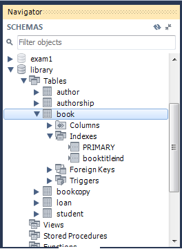
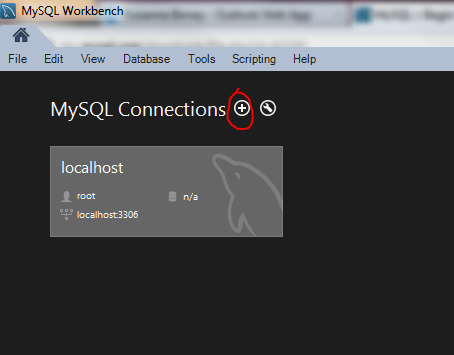
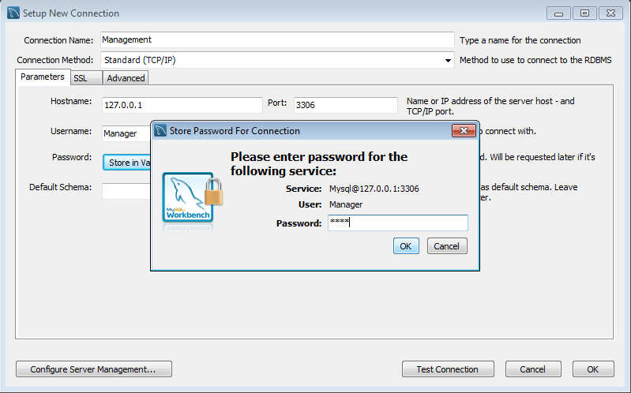
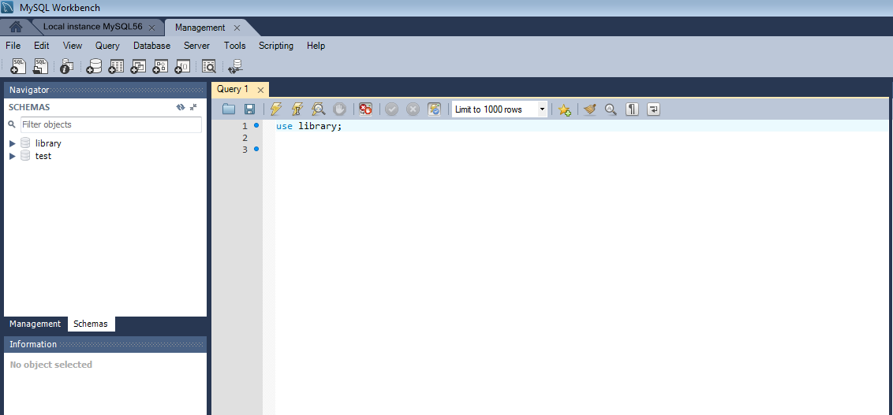

Objectives
In this lab, we will look at creating Indexes, Triggers, and Users. We will also look at granting access to users.
Indexes
An Index is a structure that provides accelerated access to the rows (records) of a table based on the values of one or more columns. The presence of an index can significantly improve the performance of a query. However, as indexes may be updated by the system every time the underlying tables are updated, additional overheads may be incurred.
Indexes are usually created to satisfy particular search criteria after the table has been in use for some time and has grown in size.
MySQL creates indexes automatically for all primary key columns and will create indexes for foreign key columns if the underlying table structure is innoDB.
Creating an Index
CREATE [UNIQUE] INDEX indexName
ON TableName (columnName [ASC|DESC] [....])The specified columns constitute the index key and should be listed in major to minor order. Indexes can be created on base tables only (and not Views).
If the UNIQUE clause is used, uniqueness of the indexed column or combination of columns will be enforced by the DBMS. This is required for the primary key (and alternate key) columns (fields).
To create an index on the book table for the title to speed up searching:
create index booktitleind on book(title);Managing Indexes
Viewing Indexes
To view the indexes from each table by using:
SHOW INDEX FROM tableName;For example:
show index from book;In addition, if you look at the schema using MySQL Workbench under the book > Indexes, you will see the indexes for the book table:

Removing an Index
If we create an index for a base table and later decide that it is no longer needed, we can use the DROP INDEX command combined with the ALTER TABLE statement to remove the index from the database.
ALTER TABLE TableName DROP INDEX indexNameThe following statement would remove the index created in the previous example:
alter table book drop index booktitleind;Triggers
A SQL trigger is a set of SQL statements stored in the database catalog. A SQL trigger is executed or fired whenever an event associated with a table
occurs e.g., INSERT, UPDATE or DELETE. A trigger can be defined to be invoked either before or after the data is changed (INSERT, UPDATE or DELETE).
A SQL trigger is called automatically when a data modification event is made against a table
MySQL trigger syntax
In order to create a new trigger, you use the CREATE TRIGGER statement. The following illustrates the syntax of the CREATE TRIGGER statement:
CREATE TRIGGER trigger_name trigger_time trigger_event
ON table_name
FOR EACH ROW
BEGIN
...
END;Let's examine the syntax above in more detail.
- You put the trigger name after the
CREATE TRIGGERstatement. The trigger name should follow the naming convention[trigger time]_[table name]_[trigger event], for examplebefore_employees_update. - Trigger activation time can be
BEFOREorAFTER. You must specify the activation time when you define a trigger. You use the BEFORE keyword if you want to process action prior to the change is made on the table and AFTER if you need to process action after the change is made. - The trigger event can be
INSERT,UPDATEorDELETE. This event causes the trigger to be invoked. A trigger only can be invoked by one event. To define a trigger that is invoked by multiple events, you have to define multiple triggers, one for each event. - A trigger must be associated with a specific table. Without a table, trigger would not exist therefore you have to specify the table name after the
ONkeyword. - You place the SQL statements between
BEGINandENDblock. This is where you define the logic for the trigger.
MySQL trigger example
We will create a trigger in MySQL to log the changes of the Book table in the library database. To do this, we will create a new table (book_audit), which will record the ISBN, and price of the record before it was updated. It also records the date and time of the change.
To do this we will create a new table, book_audit:
CREATE TABLE book_audit (
id INT AUTO_INCREMENT PRIMARY KEY,
ISBN varchar(15) not null,
price decimal(5,2),
changedate DATETIME DEFAULT NULL,
action VARCHAR(50) DEFAULT NULL
);Now, we will create a trigger before_book_update:
DELIMITER $$
CREATE TRIGGER before_book_update
BEFORE UPDATE ON book
FOR EACH ROW
BEGIN
INSERT INTO book_audit
SET action = 'update',
ISBN = OLD.ISBN,
price = OLD.price,
changedate = NOW();
END$$
DELIMITER ;Note: By default, mysql itself recognizes the semicolon as a statement delimiter, so you must redefine the delimiter temporarily to cause mysql to
pass the entire stored program definition to the server. To redefine the mysql delimiter, use the delimiter command.
Managing Triggers
Viewing Triggers
To view all triggers in the current database, you use SHOW TRIGGERS statement as follows:
show triggers;In addition, if you look at the schema using MySQL Workbench under the book > triggers, you will see the before_book_update trigger as shown in the screenshot
below:
Removing Triggers
To remove a trigger, use the DROP TRIGGER statement as follows:
drop trigger before_book_update;Users and Security
Create a user
MySQL provides the CREATE USER statement to allow you to create a new user in a database server. The syntax of the CREATE USER statement is as follows:
CREATE USER Username IDENTIFIED BY password;Please note capital letter at the start of Username --- all caps will not work.
For example, to create a new user called Manager that connects from localhost with the password boss, you use the CREATE USER statement as follows:
create user Manager identified by 'boss';To create a new user called Clerk that connects from localhost with the password desk, you use the CREATE USER statement as follows:
create user Clerk identified by 'desk';Users and Security
MySQL Grant
Now that we have created users, we can grant a range of privileges to that user on different schemas and objects. When granting privileges we can either
specify all privileges or list the privileges that we want to grant.
This example grants all privileges to the Manager user on all tables within the
library schema, and also gives the Manager the option to grant those privileges to other users.
grant all on library.* to Manager with grant option;For some users, we may wish them to only have certain privileges on certain tables, not all tables. For example, clerk in our library database may only need SELECT, DELETE, INSERT and UPDATE on all the tables.
grant insert, update, delete, select on library.* to Clerk;MySQL Revoke
We can also delete privileges from a user after they have been granted. For example, we may wish to stop our clerks from deleting records from the student table.
revoke delete on student from Clerk;In the same way as when granting privileges, the ALL command (i.e. REVOKE ALL) can be used to revoke all of a user's privileges in one operation.
To show all the privileges that have been assigned to a particular user, enter the following command:
show grants for Manager;Managing User accounts
View User accounts
To view all users in the MySQL database server, you use the following SELECT statement:
SELECT user, host FROM mysql.user;Remove an Account
To remove one or more user accounts, you use the DROP USER statement as follows:
DROP USER user, [user],...;For example to remove the user account Clerk:
drop user Clerk;Exercise
For these exercises, load the CAR_SALES database and remember to enter the command:
USE CAR_SALES;To do:
Create a user called
Management.Grant all privileges on the CAR_SALES database to
Managementand apply thewith grant option.Create a user called
Salesperson.Grant the
SELECTprivilege on all tables toSalesperson.Grant the
UPDATEprivilge on theCOSTcolumn in theCARtable toSalesperson.
Logging in as a different user
So far when using MySQL workbench we have always logged in as the root user. Thus we all had total access to all our tables. We will now create a new connection for a different user. Thus we will maintain a number of connections to the same database but depending on whom you are logged in as, you will have different access to the database.
In the home tab (click the little house), click on the plus symbol shown below, to create a New Connection. A new screen appears asking you to
define certain parameters for your new connection.

In the new connection screen, give the connection a name Management. Leave the hostname and port as they are (127.0.0.1 is the same as saying localhost).
In the username box, type Manager. In the password field, click store in vault and enter the Manager's password in the box that appears. Password is boss.

Now that you have created the connection, you can double-click on the Management connection in the list to log in and interact with the database as this user called Manager. In order to check who you are logged on as just check the tab highlighted.
